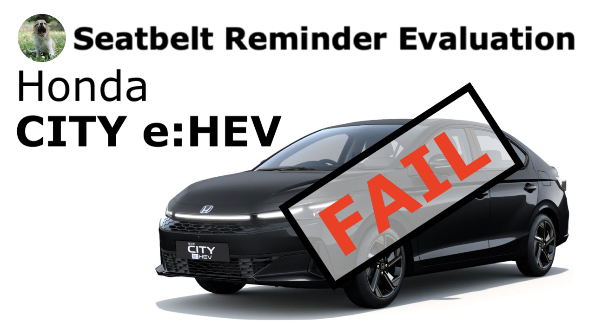

The Yawning Chihuahua
Home | Articles | Seatbelt reminder evaluation | Twitter | Instagram | YouTube | Legacy website

Honda CITY e:HEV |
||||
|---|---|---|---|---|
| Behaviour of second-level warning in the 2nd-row outboard seats | ||||
| Testcase | Description | Acoustic signal | Visual signal | Verdict |
 |
occupant does not fasten seatbelt | NO | YES | NOT OK |
 |
occupant takes off seatbelt | YES | YES | OK |
 |
seatbelt not fastened on an empty seat | NO | YES | NOT OK |
 |
seatbelt taken off on an empty seat | YES | YES | NOT OK |
| FAIL | ||||